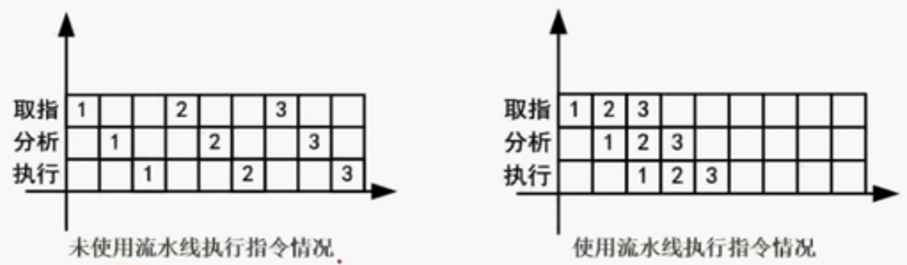
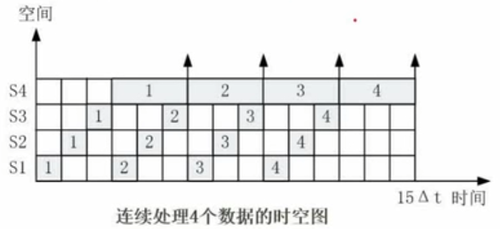

-
概念
流水线是指在程序执行时，多条指令重叠进行操作的一种准并行处理实现技术。各种部件同时处理是针对不同指令而言，它们可同时为多条指令的不同部分进行工作，以提高各部件的利用率。

-
流水线建立的时间：第一条指令完成的时间
-
流水线周期 Δt：将一条指令进行分段后，执行时间最长的那一段时长，取做流水线周期。
-
流水线计算公式：流水线执行时间 = 1条指令执行时间 +（指令条数-1） 流水线周期*
- 理论公式：(t1+t2+⋯+tk)+(n−1)×Δt
- 实践公式：(k+n−1)×Δt
例题：一条指令的执行过程可以分解为取指、分析和执行三步，在取指时间为3Δt 、分析时间为2Δt 、执行时间为4Δt 的情况下，若按串行方式执行，则10条指令全部执行完需要 90Δt；若按流水线的方式执行，流水线周期为 4Δt，则10条指令全部执行完需要 45Δt。
-
流水线的吞吐率
TP=流水线执行时间指令条数
-
流水线最大吞吐率
TPmax=Δt1
-
流水线的加速比
S=使用流水线执行时间不使用流水线执行时间
-
流水线的效率
在时空图上，流水线的效率定义为 n 个任务占用的时空区与 k 个流水段总的时空区之比。
E=k个流水段的总的时空区域n个任务占用的时空区域

上图的流水线效率为：
E=(15×4)Δt(Δt+Δt+Δt+3Δt)×4